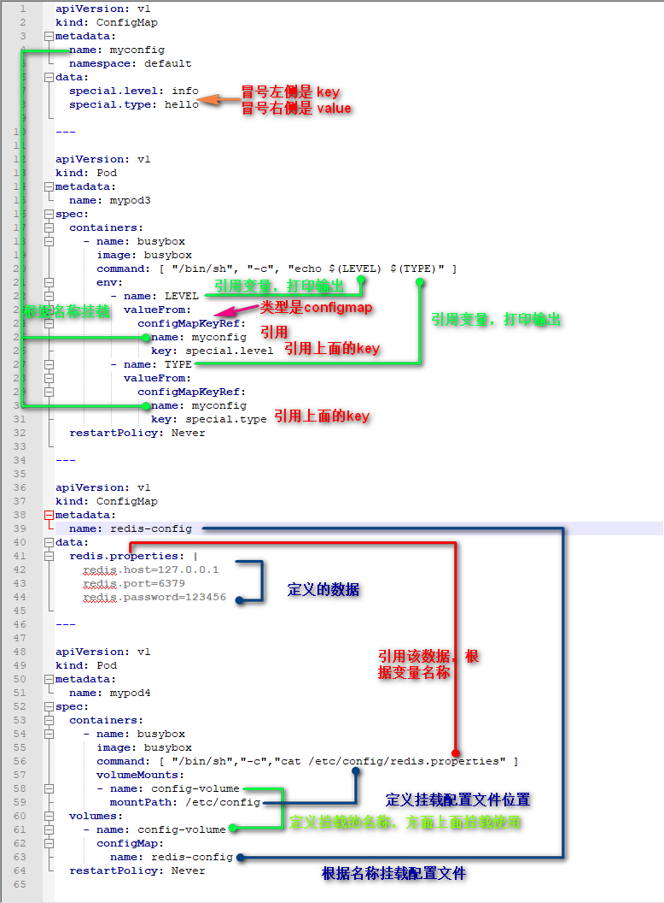

Kubernets 控制器
1. 准备环境¶
- Deployment - StatefulSet - DaemonSet - Job - CronJob
2. pod和controllers关系¶
controllers：在集群上管理和运行容器的对象通过label-selector相关联Pod通过控制器实现应用的运维，如伸缩，滚动升级等
关系
Pod Pod Pod \ | / lales: \ | / app: nginx \ | / \ | / selector: \|/ app:nginx 工作负载 WorkLoad 是通过label标签去选择pod
3. Deployment¶
- 部署无状态应用
- 管理Pod和ReplicaSet
- 具有上线部署、副本设定、滚动升级、回滚等功能
- 提供声明式更新，例如只更新一个新的Image
无状态: 水平任意扩展，不考虑IP，不考虑Pod位置，不考虑存储 有状态: 唯一访问地址，数据存储
4. DaemonSet¶
https://kubernetes.io/docs/concepts/workloads/controllers/daemonset/
- 在每一个Node上运行一个Pod
- 新加入的Node也同样会自动运行一个Pod
应用场景：Agent
agent.yaml
[root@k8s-master01 demo]# cat agent.yaml
apiVersion: apps/v1beta2
kind: DaemonSet
metadata:
name: agent
namespace: default
spec:
selector:
matchLabels:
app: agent
template:
metadata:
labels:
app: agent
spec:
containers:
- name: nginx
image: nginx:1.15
ports:
- containerPort: 80
[root@k8s-master01 demo]# kubectl apply -f agent.yaml daemonset.apps/agent created [root@k8s-master01 demo]# kubectl get pods NAME READY STATUS RESTARTS AGE agent-rxgp9 1/1 Running 0 8s agent-twh7c 1/1 Running 0 8s frontend 1/2 CrashLoopBackOff 58 16h liveness-exec 1/1 Running 66 15h nginx-deployment-5997b94b5c-79rrk 1/1 Running 0 15h nginx-deployment-5997b94b5c-cs28z 1/1 Running 0 15h nginx-deployment-5997b94b5c-zc7pp 1/1 Running 0 15h [root@k8s-master01 demo]# kubectl get pods -o wide NAME READY STATUS RESTARTS AGE IP NODE NOMINATED NODE READINESS GATES agent-rxgp9 1/1 Running 0 28s 172.17.8.6 192.168.186.142 <none> <none> agent-twh7c 1/1 Running 0 28s 172.17.66.6 192.168.186.141 <none> <none> frontend 1/2 CrashLoopBackOff 58 16h 172.17.8.3 192.168.186.142 <none> <none> liveness-exec 1/1 Running 66 15h 172.17.8.4 192.168.186.142 <none> <none> nginx-deployment-5997b94b5c-79rrk 1/1 Running 0 15h 172.17.66.5 192.168.186.141 <none> <none> nginx-deployment-5997b94b5c-cs28z 1/1 Running 0 15h 172.17.66.2 192.168.186.141 <none> <none> nginx-deployment-5997b94b5c-zc7pp 1/1 Running 0 15h 172.17.66.4 192.168.186.141 <none> <none>
我们可以看到，每个机器上都启动了一个agent容器。
5. job¶
Job分为普通任务（Job）和定时任务（CronJob）一次性执行。
https://kubernetes.io/docs/concepts/workloads/controllers/jobs-run-to-completion/
应用常见: 离线数据处理，视频解码等业务
job.yaml
#[root@k8s-master01 yml]# cat job.yaml
apiVersion: batch/v1
kind: Job
metadata:
name: pi
spec:
template:
spec:
containers:
- name: pi
image: perl
command: ["perl", "-Mbignum=bpi", "-wle", "print bpi(2000)"]
restartPolicy: Never
backoffLimit: 4
计算圆周率
[root@k8s-master01 yml]# kubectl apply -f job.yaml job.batch/pi created [root@k8s-master01 yml]# kubectl get pods|grep pi pi-4bz86 0/1 ContainerCreating 0 57s [root@k8s-master01 yml]# kubectl get job NAME COMPLETIONS DURATION AGE pi 0/1 80s 80s 等待结束 [root@k8s-master01 yml]# kubectl get pods NAME READY STATUS RESTARTS AGE agent-rxgp9 1/1 Running 0 3h10m agent-twh7c 1/1 Running 0 3h10m frontend 1/2 CrashLoopBackOff 95 19h liveness-exec 1/1 Running 116 18h nginx-deployment-5997b94b5c-79rrk 1/1 Running 0 18h nginx-deployment-5997b94b5c-cs28z 1/1 Running 0 18h nginx-deployment-5997b94b5c-zc7pp 1/1 Running 0 18h pi-4bz86 0/1 Completed 0 2m57s 查看日志 [root@k8s-master01 yml]# kubectl logs -f pi-4bz86 3.141592653589793238462643383279502884197169399375105820974944592307816406286208998628034825342117067982148086513282306647093844609550582231725359408128481117450284102701938521 1055596446229489549303819644288109756659334461284756482337867831652712019091456485669234603486104543266482133936072602491412737245870066063155881748815209209628292540917153643678925903600113305305488204665213841469519415116094330572703657595919530921861173819326117931051185480744623799627495673518857527248912279381830119491298336733624406566430860213949463952247371907021798609437027705392171762931767523846748184676694051320005681271452635608277857713427577896091736371787214684409012249534301465495853710507922796892589235420199561121290219608640344181598136297747713099605187072113499999983729780499510597317328160963185950244594553469083026425223082533446850352619311881710100031378387528865875332083814206171776691473035982534904287554687311595628638823537875937519577818577805321712268066130019278766111959092164201989380952572010654858632788659361533818279682303019520353018529689957736225994138912497217752834791315155748572424541506959508295331168617278558890750983817546374649393192550604009277016711390098488240128583616035637076601047101819429555961989467678374494482553797747268471040475346462080466842590694912933136770289891521047521620569660240580381501935112533824300355876402474964732639141992726042699227967823547816360093417216412199245863150302861829745557067498385054945885869269956909272107975093029553211653449872027559602364806654991198818347977535663698074265425278625518184175746728909777727938000816470600161452491921732172147723501414419735685481613611573525521334757418494684385233239073941433345477624168625189835694855620992192221842725502542568876717904946016534668049886272327917860857843838279679766814541009538837863609506800642251252051173929848960841284886269456042419652850222106611863067442786220391949450471237137869609563643719172874677646575739624138908658326459958133904780275898
6. cronjob¶
定时任务，像Linux的Crontab一样。定时任务。
https://kubernetes.io/docs/tasks/job/automated-tasks-with-cron-jobs
应用场景：通知，备份
cronjob.yaml
apiVersion: batch/v1beta1
kind: CronJob
metadata:
name: hello
spec:
schedule: "*/1 * * * *"
jobTemplate:
spec:
template:
spec:
containers:
- name: hello
image: busybox
args:
- /bin/sh
- -c
- date; echo Hello from the Kubernetes cluster
restartPolicy: OnFailure
[root@k8s-master01 yml]# kubectl apply -f cronjob.yaml cronjob.batch/hello created [root@k8s-master01 yml]# kubectl get pod hello-1556002260-pnbjk NAME READY STATUS RESTARTS AGE hello-1556002260-pnbjk 0/1 Completed 0 57s [root@k8s-master01 yml]# kubectl logs -f hello-1556002260-pnbjk Tue Apr 23 06:51:03 UTC 2019 Hello from the Kubernetes cluster
小结:
- Deployment：无状态部
- DaemonSet：守护进程部署
- Job & CronJob：批处理
查看api 版本
[root@k8s-master01 yml]# kubectl api-versions admissionregistration.k8s.io/v1beta1 apiextensions.k8s.io/v1beta1 apiregistration.k8s.io/v1 apiregistration.k8s.io/v1beta1 apps/v1 apps/v1beta1 apps/v1beta2 authentication.k8s.io/v1 authentication.k8s.io/v1beta1 authorization.k8s.io/v1 authorization.k8s.io/v1beta1 autoscaling/v1 autoscaling/v2beta1 autoscaling/v2beta2 batch/v1 batch/v1beta1 certificates.k8s.io/v1beta1 coordination.k8s.io/v1beta1 events.k8s.io/v1beta1 extensions/v1beta1 networking.k8s.io/v1 policy/v1beta1 rbac.authorization.k8s.io/v1 rbac.authorization.k8s.io/v1beta1 scheduling.k8s.io/v1beta1 storage.k8s.io/v1 storage.k8s.io/v1beta1 v1
7. 配置管理¶
- Secret 配置敏感信息，比如密码
- Configmap 配置文件
pod 使用secret两种方式
- 变量引入
- 挂载
7.1 Configmap¶
与Secret类似，区别在于ConfigMap保存的是不需要加密配置信息。
https://kubernetes.io/docs/tasks/configure-pod-container/configure-pod-configmap/
应用场景：应用配置
configmap.yaml
# [root@k8s-master01 yml]# cat configmap.yaml
apiVersion: v1
kind: ConfigMap
metadata:
name: myconfig
namespace: default
data:
special.level: info
special.type: hello
---
apiVersion: v1
kind: Pod
metadata:
name: mypod3
spec:
containers:
- name: busybox
image: busybox
command: [ "/bin/sh", "-c", "echo $(LEVEL) $(TYPE)" ]
env:
- name: LEVEL
valueFrom:
configMapKeyRef:
name: myconfig
key: special.level
- name: TYPE
valueFrom:
configMapKeyRef:
name: myconfig
key: special.type
restartPolicy: Never
---
apiVersion: v1
kind: ConfigMap
metadata:
name: redis-config
data:
redis.properties: |
redis.host=127.0.0.1
redis.port=6379
redis.password=123456
---
apiVersion: v1
kind: Pod
metadata:
name: mypod4
spec:
containers:
- name: busybox
image: busybox
command: [ "/bin/sh","-c","cat /etc/config/redis.properties" ]
volumeMounts:
- name: config-volume
mountPath: /etc/config
volumes:
- name: config-volume
configMap:
name: redis-config
restartPolicy: Never
[root@k8s-master01 yml]# kubectl apply -f configmap.yaml configmap/myconfig created pod/mypod3 created configmap/redis-config created pod/mypod4 created [root@k8s-master01 yml]# kubectl get pods | egrep 'pod3|pod4' mypod3 0/1 Completed 0 35s mypod4 0/1 Completed 0 35s [root@k8s-master01 yml]# kubectl logs mypod3 info hello [root@k8s-master01 yml]# kubectl logs mypod4 redis.host=127.0.0.1 redis.port=6379 redis.password=123456

7.2 Secret¶
加密数据并存放Etcd中，让Pod的容器以挂载Volume方式访问。
https://kubernetes.io/docs/concepts/configuration/secret/
应用场景：凭据
7.2.1 方式1¶
创建自己的secret文件，假设有些 pod 需要访问数据库。这些 pod 需要使用的用户名和密码在您本地机器的 ./username.txt 和 ./password.txt 文件里。
[root@k8s-master01 yml]# echo -n 'admin' > ./username.txt [root@k8s-master01 yml]# echo -n '1f2d1e2e67df' > ./password.txt [root@k8s-master01 yml]# cat username.txt admin[root@k8s-master01 yml]# cat password.txt
kubectl create secret 命令将这些文件打包到一个 Secret 中并在 API server 中创建了一个对象。
[root@k8s-master01 yml]# kubectl create secret generic db-user-pass --from-file=./username.txt --from-file=./password.txt secret/db-user-pass created [root@k8s-master01 yml]# kubectl get secret|grep db-user-pass db-user-pass Opaque 2 32s [root@k8s-master01 yml]# kubectl get secret NAME TYPE DATA AGE db-user-pass Opaque 2 20s default-token-r5m2l kubernetes.io/service-account-token 3 4d22h myregistrykey kubernetes.io/dockerconfigjson 1 20h
7.2.2 方式2¶
通过终端直接创建
mysecret.yaml
# [root@k8s-master01 yml]# cat mysecret.yaml apiVersion: v1 kind: Secret metadata: name: mysecret type: Opaque data: username: YWRtaW4= password: MWYyZDFlMmU2N2Rm
数据字段是一个映射。它的键必须匹配 DNS_SUBDOMAIN，前导点也是可以的。这些值可以是任意数据，使用 base64 进行编码。
[root@k8s-master01 yml]# echo -n "admin" | base64 YWRtaW4= [root@k8s-master01 yml]# echo -n "1f2d1e2e67df" | base64 MWYyZDFlMmU2N2Rm [root@k8s-master01 yml]# cat mysecret.yaml apiVersion: v1 kind: Secret metadata: name: mysecret type: Opaque data: username: YWRtaW4= password: MWYyZDFlMmU2N2Rm [root@k8s-master01 yml]# kubectl apply -f mysecret.yaml secret/mysecret created [root@k8s-master01 yml]# kubectl get secret NAME TYPE DATA AGE db-user-pass Opaque 2 8m22s default-token-r5m2l kubernetes.io/service-account-token 3 4d23h myregistrykey kubernetes.io/dockerconfigjson 1 20h mysecret Opaque 2 114s [root@k8s-master01 yml]# kubectl describe secret mysecret Name: mysecret Namespace: default Labels: <none> Annotations: Type: Opaque Data ==== password: 12 bytes username: 5 bytes
这样账号和密码就保存在k8s中， 接下来我们来使用这账号和密码。
解码注意
secret 数据的序列化 JSON 和 YAML 值使用 base64 编码成字符串。换行符在这些字符串中无效，必须省略。当在 Darwin/OS X 上使用 base64 实用程序时，用户应避免使用 -b 选项来拆分长行。另外，对于 Linux 用户如果 -w 选项不可用的话，应该添加选项 -w 0 到 base64 命令或管道 base64 | tr -d '\n' 。
[root@k8s-master01 yml]# kubectl get secret mysecret -o yaml
apiVersion: v1
data:
password: MWYyZDFlMmU2N2Rm
username: YWRtaW4=
kind: Secret
metadata:
annotations:
kubectl.kubernetes.io/last-applied-configuration: |
{"apiVersion":"v1","data":{"password":"MWYyZDFlMmU2N2Rm","username":"YWRtaW4="},"kind":"Secret","metadata":{"annotations":{},"name":"mysecret","namespace":"default"},"typ
e":"Opaque"} creationTimestamp: "2019-04-23T07:12:56Z"
name: mysecret
namespace: default
resourceVersion: "125544"
selfLink: /api/v1/namespaces/default/secrets/mysecret
uid: 37f8370c-6597-11e9-9365-000c2994bdca
type: Opaque
[root@k8s-master01 yml]# echo "MWYyZDFlMmU2N2Rm" | base64 --decode
1f2d1e2e67df
[root@k8s-master01 yml]# echo "YWRtaW4=" | base64 --decode
admin
方式1：以便利方式 使用secret
Secret 可以作为数据卷被挂载，或作为环境变量暴露出来以供 pod 中的容器使用。它们也可以被系统的其他部分使用，而不直接暴露在 pod 内。例如，它们可以保存凭据，系统的其他部分应该用它来代表您与外部系统进行交互。
[root@k8s-master01 yml]# kubectl get pods
NAME READY STATUS RESTARTS AGE
agent-rxgp9 1/1 Running 0 3h52m
agent-twh7c 1/1 Running 0 3h52m
frontend 1/2 CrashLoopBackOff 103 20h
hello-1556004300-f9p4n 0/1 Completed 0 2m47s
hello-1556004360-2g6xl 0/1 Completed 0 107s
hello-1556004420-4c2bg 0/1 Completed 0 47s
liveness-exec 0/1 CrashLoopBackOff 127 19h
nginx-deployment-5997b94b5c-79rrk 1/1 Running 0 18h
nginx-deployment-5997b94b5c-cs28z 1/1 Running 0 18h
nginx-deployment-5997b94b5c-zc7pp 1/1 Running 0 18h
pi-4bz86 0/1 Completed 0 44m
[root@k8s-master01 yml]# cat secret-var.yaml
apiVersion: v1
kind: Pod
metadata:
name: mypod
spec:
containers:
- name: nginx
image: nginx
env:
- name: SECRET_USERNAME
valueFrom:
secretKeyRef:
name: mysecret
key: username
- name: SECRET_PASSWORD
valueFrom:
secretKeyRef:
name: mysecret
key: password
# echo $SECRET_USERNAME
# echo $SECRET_PASSWORD
[root@k8s-master01 yml]# kubectl apply -f secret-var.yaml
pod/mypod created
[root@k8s-master01 yml]# kubectl get pods
NAME READY STATUS RESTARTS AGE
agent-rxgp9 1/1 Running 0 3h52m
agent-twh7c 1/1 Running 0 3h52m
frontend 1/2 CrashLoopBackOff 103 20h
hello-1556004300-f9p4n 0/1 Completed 0 2m59s
hello-1556004360-2g6xl 0/1 Completed 0 119s
hello-1556004420-4c2bg 0/1 Completed 0 59s
liveness-exec 0/1 CrashLoopBackOff 127 19h
mypod 1/1 Running 0 4s
nginx-deployment-5997b94b5c-79rrk 1/1 Running 0 18h
nginx-deployment-5997b94b5c-cs28z 1/1 Running 0 18h
nginx-deployment-5997b94b5c-zc7pp 1/1 Running 0 18h
pi-4bz86 0/1 Completed 0 45m
进入容器
[root@k8s-master01 yml]# kubectl exec -it mypod bash
root@mypod:/# echo echo $SECRET_USERNAME
echo admin
root@mypod:/# echo $SECRET_PASSWORD
1f2d1e2e67df
步骤：
- 先创建账号和密码[两种方式:1.文件 2.终端base64]
- 在yaml中直接引用存在secret的数据，以变量方式引用
方式2：以挂载方式 使用secret
secret-vol.yaml
#[root@k8s-master01 yml]# cat secret-vol.yaml
---
apiVersion: v1
kind: Pod
metadata:
name: mypod2
spec:
containers:
- name: nginx
image: nginx
volumeMounts:
- name: foo
mountPath: "/etc/foo"
readOnly: true
volumes:
- name: foo
secret:
secretName: mysecret
# cat /etc/foo/username
# cat /etc/foo/password
[root@k8s-master01 yml]# kubectl get secret NAME TYPE DATA AGE db-user-pass Opaque 2 33m default-token-r5m2l kubernetes.io/service-account-token 3 4d23h myregistrykey kubernetes.io/dockerconfigjson 1 21h mysecret Opaque 2 26m [root@k8s-master01 yml]# kubectl describe secret mysecret Name: mysecret Namespace: default Labels: <none> Annotations: Type: Opaque Data ==== password: 12 bytes username: 5 bytes [root@k8s-master01 yml]# kubectl apply -f secret-vol.yaml pod/mypod2 created [root@k8s-master01 yml]# kubectl get pods NAME READY STATUS RESTARTS AGE agent-rxgp9 1/1 Running 0 4h agent-twh7c 1/1 Running 0 4h frontend 1/2 CrashLoopBackOff 104 20h hello-1556004840-xxzkc 0/1 Completed 0 2m12s hello-1556004900-pf82c 0/1 Completed 0 72s hello-1556004960-j92fl 0/1 Completed 0 12s liveness-exec 0/1 CrashLoopBackOff 129 19h mypod 1/1 Running 0 8m9s mypod2 1/1 Running 0 15s nginx-deployment-5997b94b5c-79rrk 1/1 Running 0 19h nginx-deployment-5997b94b5c-cs28z 1/1 Running 0 19h nginx-deployment-5997b94b5c-zc7pp 1/1 Running 0 19h pi-4bz86 0/1 Completed 0 53m [root@k8s-master01 yml]# kubectl exec mypod2 bash [root@k8s-master01 yml]# kubectl exec -it mypod2 bash root@mypod2:/# ls /etc/foo/ password username root@mypod2:/# cat /etc/foo/password 1f2d1e2e67dfroot@mypod2:/# cat /etc/foo/username adminroot@mypod2:/#
可见。之前存在secret名称空间的mysecret，已挂的方式，挂载到容器的 /etc/foo下面了。